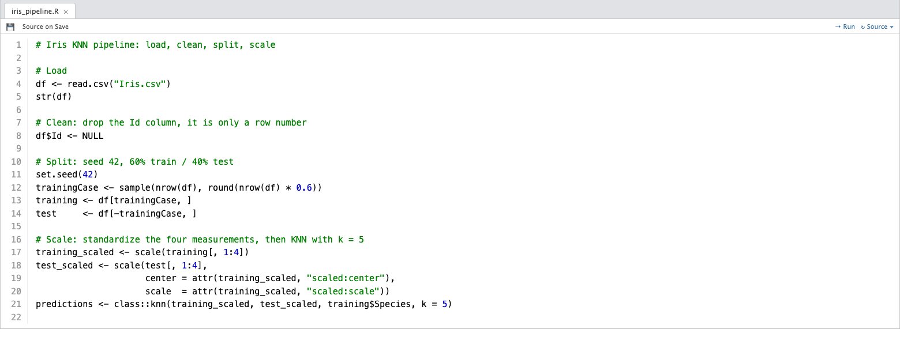

A clean, balanced classification story with one live control: drag the k slider and watch the decision boundary trade detail for smoothness.
Emil · Hamad · Manuel · Fred
Final Team Project · July 2026
scroll or press the down arrow
01 · Dataset
Why Iris is a strong KNN teaching dataset
Iris Species, from Kaggle: 150 flowers, 50 per species, four measurements in centimeters, no missing values. The species label is the categorical target we predict.
The chart tells the story at a glance. The red setosa cluster sits far from everything, clearly separated. The green versicolor and blue virginica clusters overlap, and that overlap is exactly where a classifier earns its keep.
Small, balanced and visually separable enough to make KNN easy to explain without losing realism.
The 90 training flowers in the petal view, straight from ggplot2 in R. Red separates cleanly; green and blue overlap.
02 / 09
02 · Variables
Species is the target, four measurements do the predicting
SepalLengthCm
SepalWidthCm
PetalLengthCm
PetalWidthCm
Species
5.1
3.5
1.4
0.2
Iris-setosa
7.0
3.2
4.7
1.4
Iris-versicolor
6.3
3.3
6.0
2.5
Iris-virginica
All four numeric measurements go into the model as predictors. The only dropped column is Id, a plain row number with nothing to teach a model.
Balance matters: with exactly 50 flowers per species, accuracy is a fair score and no class can hide behind the others.
03 / 09
03 · Preparation
Cleaning was minimal, so the work went into the model
01
Load
Read the CSV into R and check the structure with str(df): 150 rows, four numeric measurements, one species label.
02
Clean
Drop the Id column with df$Id <- NULL. It is only an index, not a predictor. Every row stays.
03
Split
set.seed(42), then a random 60/40 split: 90 flowers train the model, 60 held back to test it honestly.
04
Scale
Standardize the measurements before KNN, so every variable speaks with the same weight in the distance.

The four steps as they appear in the team's R script.
The test set lands at 16 setosa, 19 versicolor and 25 virginica. Every score in this deck is measured on those held-back 60 flowers.
04 / 09
04 · Method
How KNN turns nearby flowers into a vote
In plain words
A new flower is placed among the training flowers by how close its measurements sit to theirs. The model finds the k most similar flowers and takes a vote: whichever species is most common among them wins.
No equations to fit
KNN never builds a formula. The training data itself is the model, which is exactly why the choice of k is the whole tuning story, and why the next slide hands you that dial.
Three of the five nearest neighbors are green, so the vote goes to versicolor. The dashed circle is the whole algorithm.
05 / 09
05 · Choosing k
Move the slider to see why k = 5 is the chosen balance
The boundary is already smooth enough at k = 5 to separate setosa cleanly while still preserving the versicolor / virginica transition area. Regions are drawn in the petal view; the accuracy and matrix on the right come from the full four-feature model.
k = 5
96.7%
test accuracy
2
of 60 misclassified
06 / 09
06 · Results
At k = 5 the model misses two flowers out of sixty
Hover any cell for its plain-language meaning.
96.7%
test accuracy
58 / 60
flowers correct
Every setosa and every versicolor flower lands in the right box. The only errors are two virginica flowers voted versicolor, and both sit exactly in the green-blue overlap the scatter plot promised.
Accuracy holds at 96.7% for every k from 1 to 9, then slips to 95% from k = 11 on, as oversized neighborhoods start smoothing over the boundary. k = 5 sits in the middle of the stable plateau: local enough to keep detail, broad enough not to chase single points.
A useful yardstick: always guessing virginica, the biggest class in the test set, would score about 42%. The model scores 96.7%.
07 / 09
07 · Takeaways
Simple beat complex on this dataset, and that was the lesson
KNN over a neural network, on purpose
A deep model like a CNN wants thousands of labeled examples; on 150 rows it tends to overfit. KNN just stores the data and votes, and it behaves predictably on small datasets. Occam's Razor: no added complexity unless it buys real value.
Easy to explain is a feature
A KNN prediction can be explained to anyone in one sentence: the five most similar flowers voted. A neural network is a black box by comparison, and this project is graded on clear explanation.
Errors live where classes overlap
Both misses sit where green and blue blur together. Knowing your data means your errors stop being surprises.
The result already meets the target without deep-learning complexity, which is the strongest case for the simpler model.
08 / 09
Four measurements were enough to name the flower
Trained on 90 flowers and tested on 60, our scaled KNN model reaches 96.7% accuracy at k = 5. Dataset: Iris Species, on Kaggle.
Thanks for watching · Emil · Hamad · Manuel · Fred